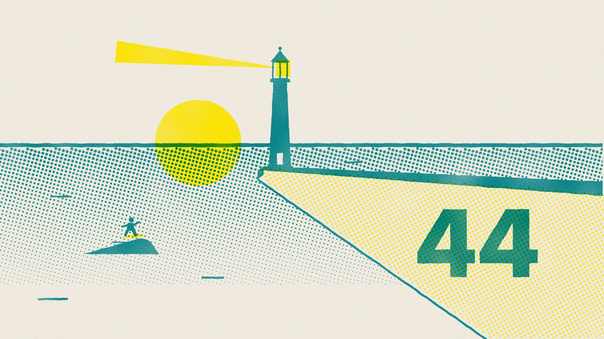
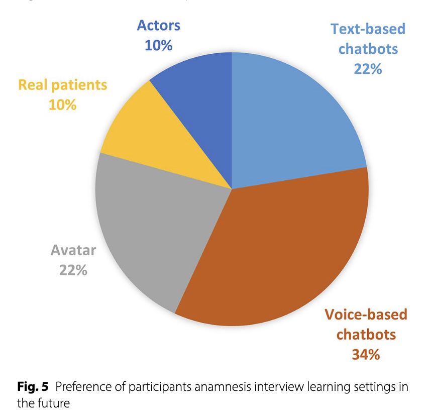
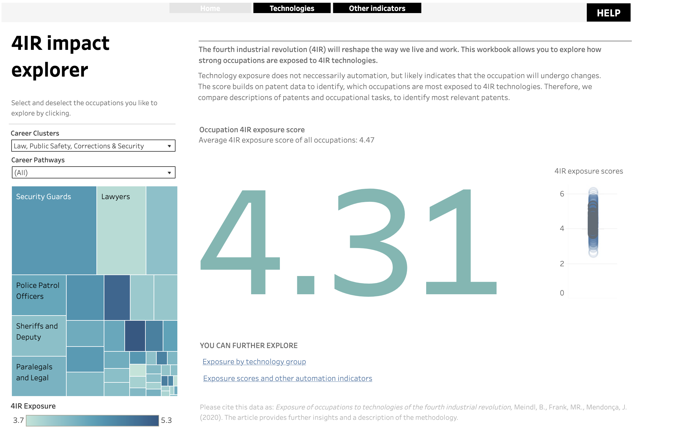
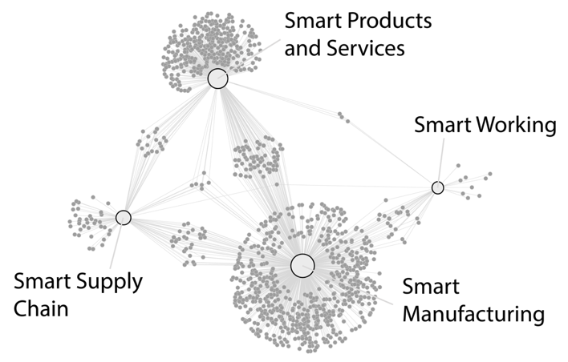
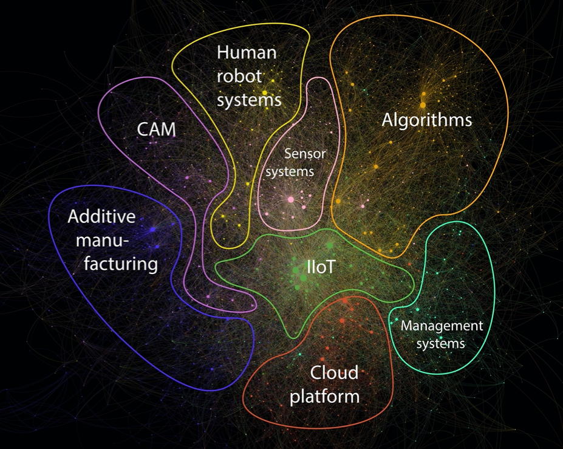
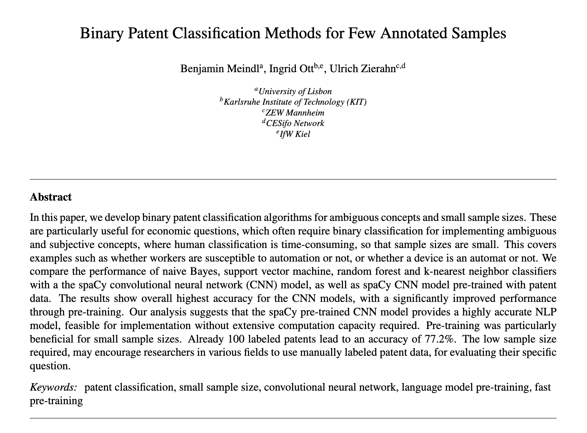

Weekly Notes · 26 October edition
Everything Around the Model
What happens around an AI model matters: teaching workflows, grading checks, infrastructure and access.
Read on Medium ↗AI products · Research · Writing
I build AI products for education and write about what I learn along the way.
Head of Agentic AI Platform at IU International University, working on Syntea with our team.
Munich · Technology, learning & the future of work
Weekly Notes · 26 October edition
What happens around an AI model matters: teaching workflows, grading checks, infrastructure and access.
Read on Medium ↗Essay · 20 October 2026
Why I built a board to keep track of my AI agents and the points where they need me.
Read on Medium ↗
BMC Medical Education · 2025 · Co-authored
A co-authored survey of student perceptions of GPT-4 virtual patients for medical history interviews. Clinical skill outcomes were not measured.
Read research ↗
Preprint · 2021
Linking patents to task descriptions to study occupational exposure to Industry 4.0 technologies.
Read preprint ↗
Technological Forecasting & Social Change · 2021
Ten years of Industry 4.0 research, reviewed through the four smarts framework.
Read research ↗
Preprint · 2021
Mapping relationships and trends across Industry 4.0 technologies.
Read preprint ↗
Research · 2019
Comparing methods for classifying patents when few labelled examples are available.
Read research ↗I speak and teach about AI, technological change and putting new ideas into practice.
2025
Técnico Lisboa — guest lecture
2023–2025
IU International University — teaching
2021
Aarhus University — guest lecture
2021
UFRGS, NEO Seminars — talk and tutorial
2020
Técnico Lisboa, University of Lisbon — master’s teaching
2020
NOVA University, SMART Datasprint — tutorial
2019
Presentation at the 7th Master Class on EU Cohesion Policy (European Week of Regions and Cities)
2019
PatentSemTech at SEMANTiCS — workshop talk
2019
IC2S2 — conference presentation
2019
Technology, Management, and Policy (TMP) Doctoral Consortium — George Washington University, Washington, DC · doctoral consortium presentation
2019
INEKA — conference presentation
2019
Building the Future @ CEiiA — invited talk
My background combines management consulting with PhD research on Industry 4.0 and the future of work.
Off-duty, you'll find me on a yoga mat or chasing waves in Portugal.